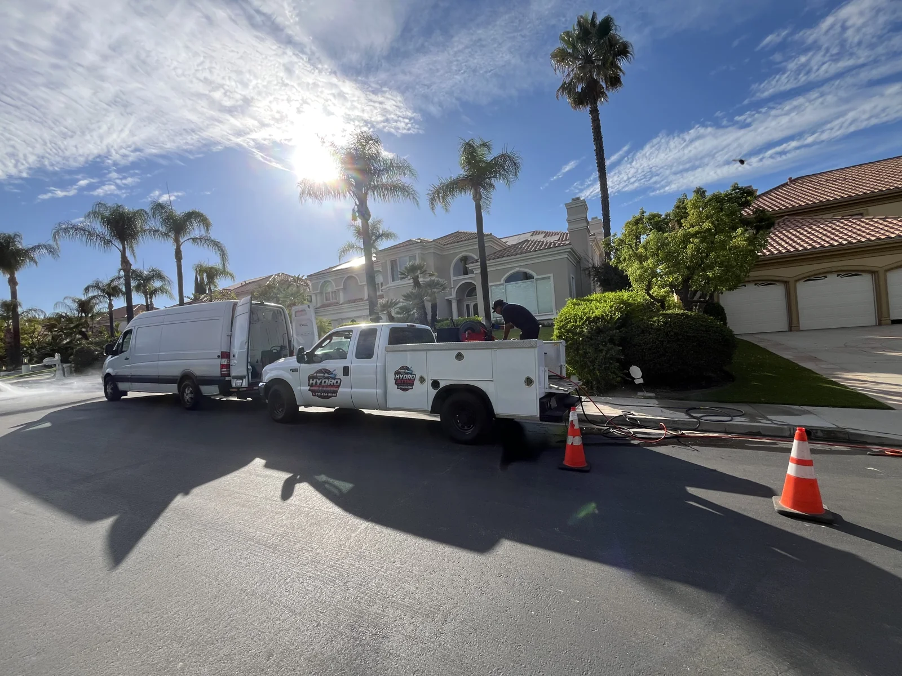
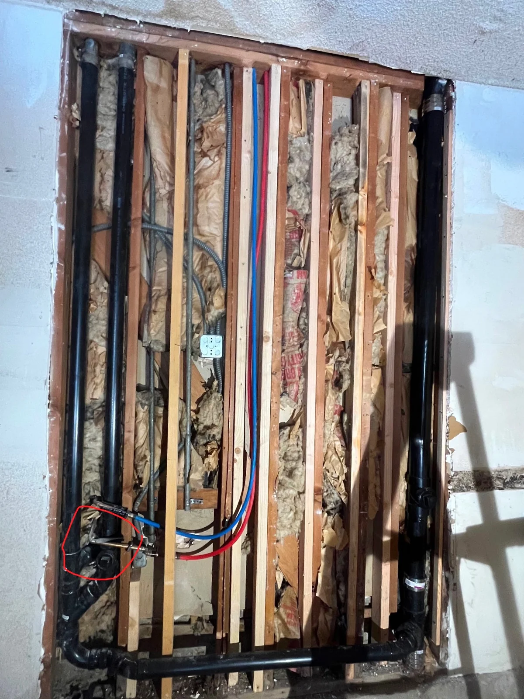

Plumbing Repairs
Leaks, dripping faucets, toilet problems and everyday plumbing connections.
Explore serviceFrom everyday repairs to bathroom upgrades, we help Los Angeles homeowners get their plumbing back where it belongs. Straightforward conversations. Careful workmanship. A family-owned business you can call.

Straightforward help with the plumbing problems that interrupt your day.
Leaks, dripping faucets, toilet problems and everyday plumbing connections.
Explore serviceSlow drains, repeat clogs, gurgling and returning wastewater.
Explore serviceRepair, replacement and installation for household hot water.
Explore serviceFaucets, sinks, toilets and the connections that make them usable.
Explore serviceShower, tub, toilet and bathroom plumbing repairs and upgrades.
Explore servicePlumbing lines and fixture connections planned for a new project.
Explore serviceDiscuss less excavation-intensive options for an existing drain or sewer line.
Explore serviceA resin-based liner within a suitable existing drain or sewer pipe.
Explore serviceA trenchless replacement approach for a suitable buried pipe route.
Explore serviceAn applied interior coating for a suitable, prepared drain pipe.
Explore service
When something goes wrong with your plumbing, you want answers and a clear next step. Our focus is making that conversation simple.
Explore our local service pages and call to confirm coverage for your address.
Follow the work through six chapters. Choose a detail, open a photograph or watch a short film.
A closer look at the pipework, connections and spaces behind everyday plumbing.
Tell us what is happening and where you need help. For current availability or an urgent issue, please call.
Or call (213) 424-8544